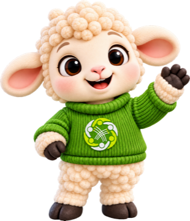
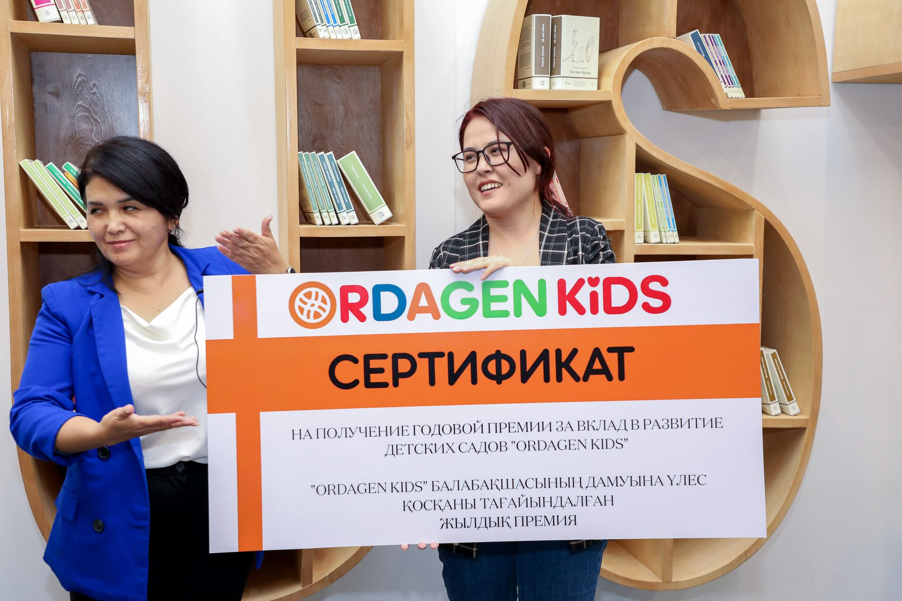
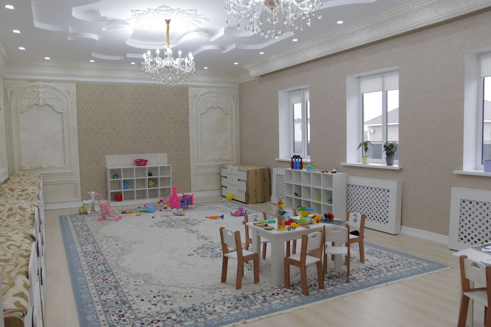
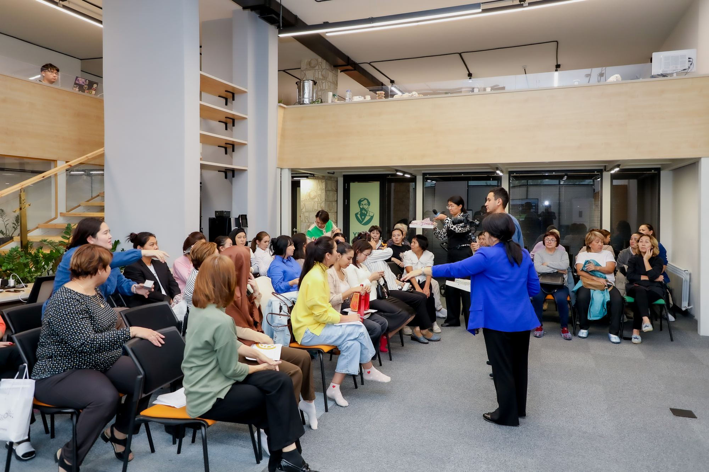
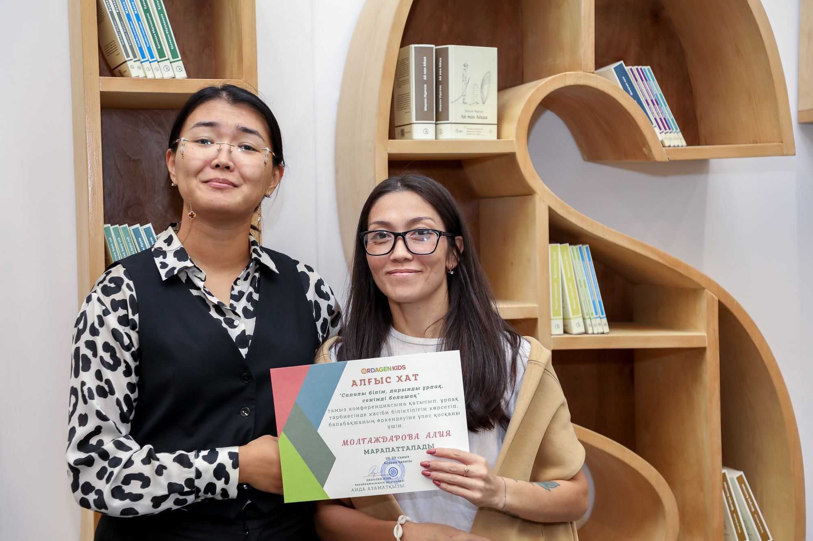
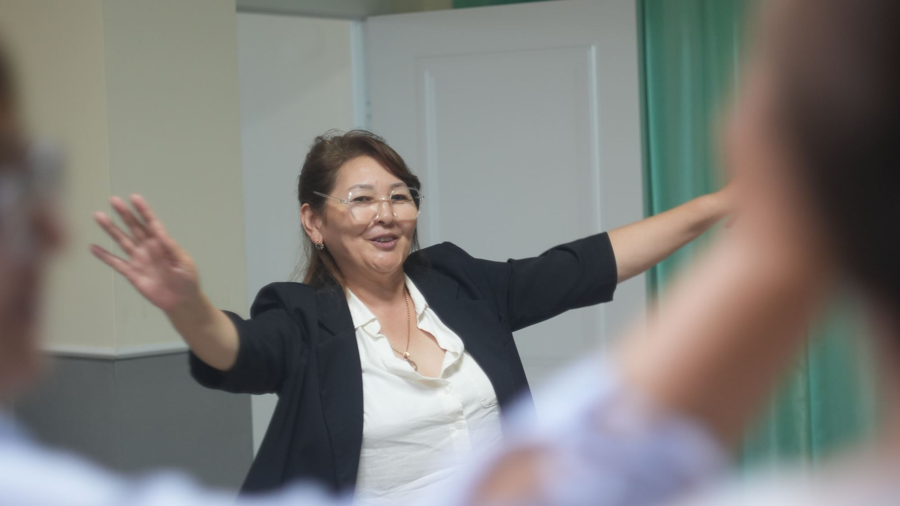
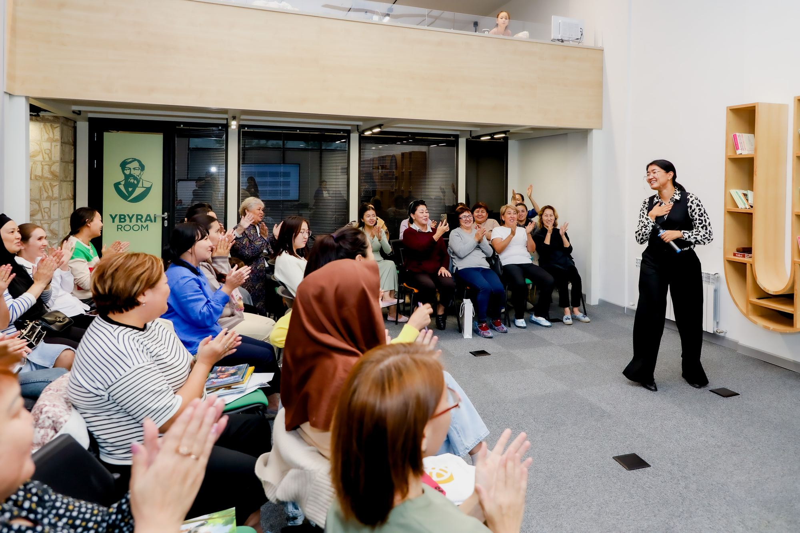
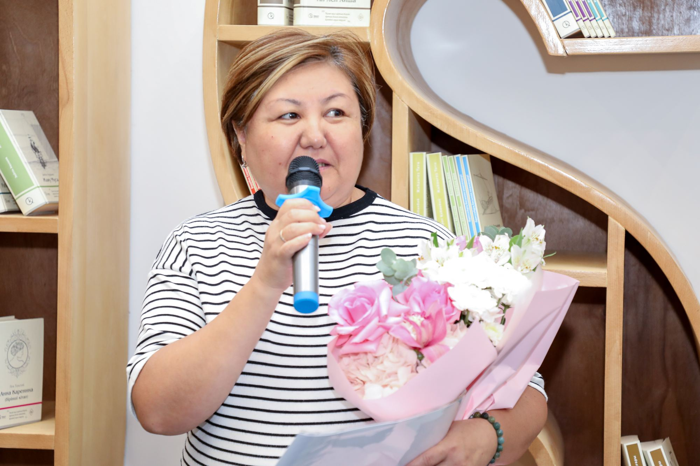
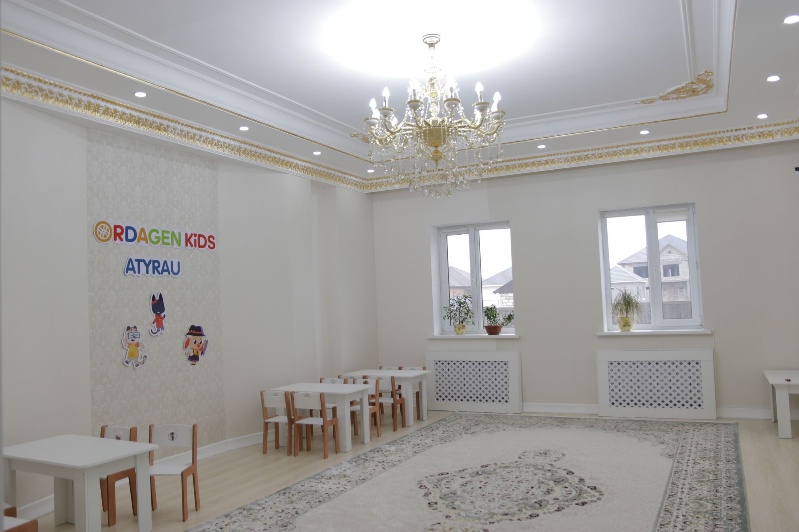

Франшиза детских садов ORDOGENГотовая технология детского сада: методика, платформа ORDO, обучение команды и сопровождение до открытия. Помещение подбираем вместе с вами после обучения.
Как проходит открытие
ORDOGEN открывают только семейные пары с детьми. Мы ищем не капитал, а людей, которые построят сад как свой дом.
Сад работает каждый день и годами. В семье решения принимаются быстрее, а ответственность делится на двоих.
Вы сами выбирали сад своим детям — знаете, чего ждут мамы и папы, и говорите с ними на одном языке.
Семья строит дело на годы, а не ради быстрой продажи. Детям в саду нужна именно такая стабильность.

Вам не нужно собирать систему по частям: методика, платформа и команда поддержки уже работают в садах сети.
Тысячи готовых сценариев уроков, циклограммы на весь учебный год и рабочие тетради для детей 2–7 лет.
Кабинеты методиста, повара, HR, финансов и родителя — весь сад в одной системе.
Обучение директора и педагогов, онлайн-курсы и аттестация персонала на платформе.
После обучения подбираем помещение, проверяем его по санитарным нормам, даём макет, список оснащения и смету ремонта.
CRM, скрипты и воронки зачисления, реклама и узнаваемый бренд ORDOGEN.
Юристы, HR, методисты и маркетинг рядом на каждом шаге. В Казахстане помогаем с лицензированием и госзаказом.
Мы идём рядом на каждом этапе. Помещение заранее искать не нужно — сначала обучение.
Оставьте контакты — менеджер напишет вам в WhatsApp.
Созвон, знакомство с вашей семьёй, ответы на вопросы и проверка свободной территории.
Фиксируем город, состав пакета и график запуска.
Учим технологии ORDOGEN: методика, управление садом, работа на платформе ORDO.
Ищем и проверяем помещение по санитарным нормам, готовим макет и смету ремонта.
Помогаем с открытием, подбором команды и первыми детьми.
Партнёры и педагоги учатся вместе: каждый год — августовская конференция, тренинги и награждение лучших команд.





Обучение, обмен опытом и новые методики к учебному году.
Директора и педагоги учатся очно и на платформе ORDO.
Лучшие педагоги и команды получают сертификаты и награды сети.
Где уже работают сады ORDOGEN и какие районы и города свободны. Выберите свой — менеджер подтвердит, что территория свободна, и расскажет об условиях.
Единоразовая выплата зависит от страны и размера города, ежемесячный переменный платёж везде одинаковый — 9% от выручки родительских взносов.
Зависит от страны и размера города — цены в таблице ниже.
От выручки родительских взносов. Одинаковый во всех странах.
Оплачивает партнёр. Макет, список оснащения и смету готовим вместе.
| Категория | Единоразовая выплата | Города |
|---|---|---|
| Города-миллионники | $32 000 | Алматы, Астана, Шымкент |
| Крупные областные центры | $16 000 | Актобе, Караганда, Павлодар, Усть-Каменогорск, Кызылорда, Атырау, Актау, Семей |
| Средние города | $10 500 | Уральск, Костанай, Талдыкорган, Туркестан, Петропавловск, Кокшетау |
| Малые города | $4 200 | Рудный, Жезказган, Жанаозен, Каскелен, Талгар, Балхаш, Экибастуз |
| Категория | Единоразовая выплата | Города |
|---|---|---|
| Узбекистан — Ташкент | $5 000 | Ташкент |
| Узбекистан — крупные города | $3 000 | Самарканд, Наманган, Андижан, Фергана, Бухара, Нукус, Карши, Коканд |
| Узбекистан — средние города | $2 000 | Маргилан, Джизак, Термез, Ургенч, Навои, Гулистан, Ангрен, Чирчик, Алмалык, Шахрисабз |
| Россия — Москва и Санкт-Петербург | $5 000 | Москва, Санкт-Петербург |
| Россия — города-миллионники | $4 000 | Новосибирск, Екатеринбург, Казань, Нижний Новгород, Челябинск, Самара, Уфа, Ростов-на-Дону, Омск, Красноярск, Воронеж, Пермь, Волгоград, Краснодар |
| Россия — крупные города | $3 000 | Тюмень, Саратов, Тольятти, Ижевск, Барнаул, Ульяновск, Иркутск, Хабаровск, Владивосток, Томск, Оренбург, Кемерово, Рязань, Астрахань, Пенза, Липецк, Киров, Калининград, Сочи |
| Россия — средние города | $2 000 | Прочие областные и республиканские центры от 100 тыс. жителей |
| Азербайджан — Баку | $5 000 | Баку |
| Азербайджан — крупные города | $2 500 | Гянджа, Сумгаит |
| Азербайджан — регионы | $1 500 | Мингечаур, Нахчыван, Ширван, Лянкяран, Шеки, Евлах, Хачмаз, Барда |
| Кыргызстан — Бишкек | $3 500 | Бишкек |
| Кыргызстан — Ош | $2 500 | Ош |
| Кыргызстан — регионы | $1 500 | Джалал-Абад, Каракол, Токмок, Узген, Нарын, Талас, Баткен, Кара-Балта |
| Беларусь — Минск | $3 500 | Минск |
| Беларусь — областные центры | $2 000 | Гомель, Могилёв, Витебск, Гродно, Брест |
| Беларусь — прочие города | $1 500 | Бобруйск, Барановичи, Борисов, Пинск, Орша, Мозырь, Солигорск, Лида |
| Армения — Ереван | $3 500 | Ереван |
| Армения — крупные города | $2 000 | Гюмри, Ванадзор |
| Армения — регионы | $1 500 | Вагаршапат, Раздан, Абовян, Капан, Иджеван, Гавар, Армавир |
| Таджикистан — Душанбе | $3 000 | Душанбе |
| Таджикистан — Худжанд | $2 000 | Худжанд |
| Таджикистан — регионы | $1 500 | Бохтар, Куляб, Истаравшан, Пенджикент, Турсунзаде, Исфара, Канибадам |
| Молдова — Кишинёв | $3 000 | Кишинёв |
| Молдова — регионы | $1 500 | Бельцы, Кагул, Унгены, Сорока, Орхей, Комрат |
| Туркменистан — Ашхабад | $3 000 | Ашхабад |
| Туркменистан — регионы | $1 500 | Туркменабат, Дашогуз, Мары, Балканабат, Байрамали |
Пять вопросов — меньше минуты. Ответьте честно: так мы быстрее поймём, подходит ли вам франшиза.
Оставьте заявку — менеджер расскажет об условиях в вашем городе и проверит, свободна ли территория.
Часть условий можно обсудить с менеджером. Оставьте заявку, и мы подскажем, как подготовиться к запуску.
Если среди ваших знакомых есть такая семья, поделитесь с ними этой страницей.
Только семейные пары с детьми. Сад — семейное дело на годы, а родители лучше всех понимают, чего ждут другие мамы и папы.
Нет. Сначала вы проходите обучение, затем мы вместе подбираем помещение и проверяем его по санитарным нормам. Договор аренды подписывается только после такой проверки.
Единоразовая выплата зависит от страны и размера города — от $1 500, все цены в разделе «Условия». Ежемесячный платёж — 9% от выручки родительских взносов. Ремонт и оснащение помещения оплачиваются отдельно.
Не обязательно: мы обучаем вас и вашу команду. Директором сада должен быть человек с профильной квалификацией, согласованный с нами.
График запуска согласуем при подписании договора. Мы ждём от партнёра готовности открыть сад в течение 3 месяцев после того, как помещение подобрано.
Да. В других странах цены ниже, а состав пакета отличается: часть процедур партнёр проходит с местным подрядчиком. Всё перечислено в разделе «Условия», вкладка «Что входит в пакет».
Менеджер свяжется с вами в WhatsApp, ответит на вопросы и проверит, свободен ли ваш город.
